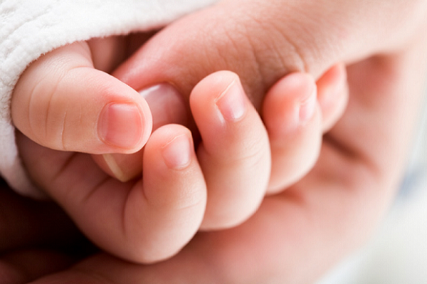

Повреждения ногтей пальцев рук или ног очень болезненны, и они долго заживают. Но они действительно заживают. Повреждения ногтей пальцев рук и ног лечатся одинаково. Существует несколько вещей, которые вы должны знать, чтобы помочь своему ребенку.
РАЗМОЗЖЕНИЕ
При размозжении (когда что-то тяжелое падает или ударяет по ногтю) необходимо прикладывать лед на 20 минут один раз в час в течение нескольких часов, а затем примерно трижды в день в течение следующих 1—2 дней. Это поможет уменьшить отек. Вы увидите темно-красную или фиолетовую кровь под ногтем, и это ожидаемо. Обратите внимание, если крови под ногтем так много, что ногтевое ложе (место, где основание ногтя исчезает в коже) поднимается. Вот как можно это определить: посмотрите на неповрежденный ноготь сбоку, и вы заметите, что ногтевое ложе загибается вниз, поскольку оно врастает под кожу, а кожа снова поднимается под углом вверх (как очень мелкая буква «V»). Если поврежденное ногтевое ложе образует с кожей прямую линию (не «V») или, еще хуже, формирует перевернутую «V», давление необходимо ослабить, иначе живая часть ногтевого ложа (под кожей) может погибнуть, и тогда ноготь не отрастет заново. Ваш врач (или врач отделения неотложной помощи) может облегчить напряжение, сделав в ногте отверстие с помощью прибора для прижигания электрическим током. Звучит жутковато, но на самом деле процедура довольно простая и безболезненная. Она не срочная и может подождать 24 часа, а между тем лед поможет уменьшить отек.
РАЗРЫВЫ И ПЕРЕЛОМЫ
Это, вероятно, одна из самых болезненных травм, причем она может быть также частью перелома фаланги пальца. При этом ноготь частично или полностью отделяется от ногтевого ложа. Ткань ногтя может быть порезана или порвана. Ребенка с такой травмой необходимо отвезти в отделение неотложной помощи, поскольку большинство обычных врачебных офисов не могут выделить время и сотрудников для занятия сложными травмами, подобными этой.
ОЖИДАЕМОЕ ВРЕМЯ ЗАЖИВЛЕНИЯ Новый ноготь, который вырастает после травмы, может быть толще и немного деформирован, а старый поврежденный ноготь начнет отпадать. Это нормально. Вы может обрезать любую часть ногтя, которая доставляет неудобство. Когда поврежденный ноготь полностью отрастет (через 1—2 месяца), новый ноготь, возможно, будет оставаться тонким и неровным в течение 1—2 лет. В конце концов восстановится нормальный гладкий ноготь. |
Если врач «Скорой помощи» определит, что ноготь нужно вправить, он полностью заморозит палец, вернет ноготь на место и пришьет его; возможно, ему понадобится наложить швы на разрывы ногтя. Эта травматическая процедура, скорее всего, стоит того. Если ноготь не закреплен как положено, он может не восстановиться.
Здоровье ребенка от докторов Сирс / Сирс У. и др.